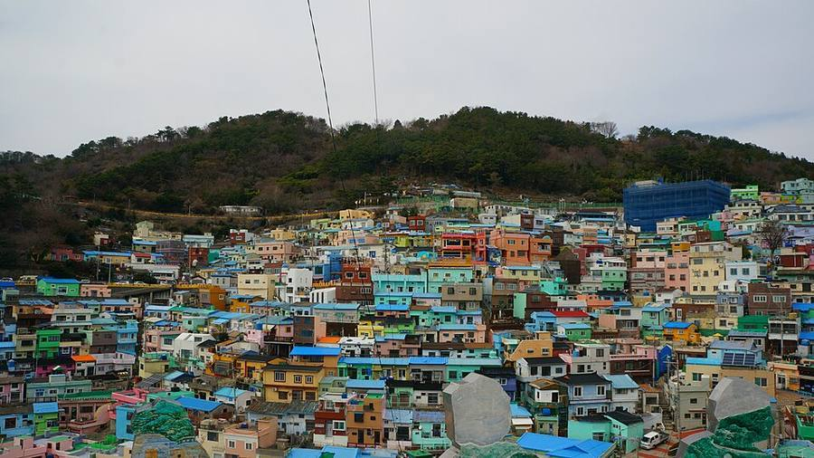
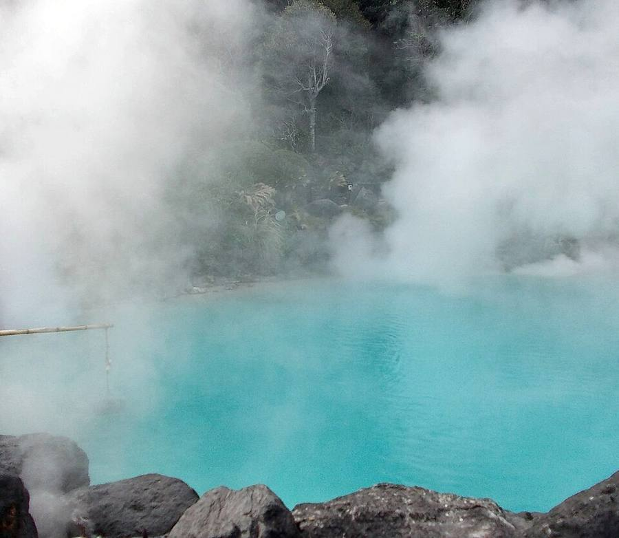
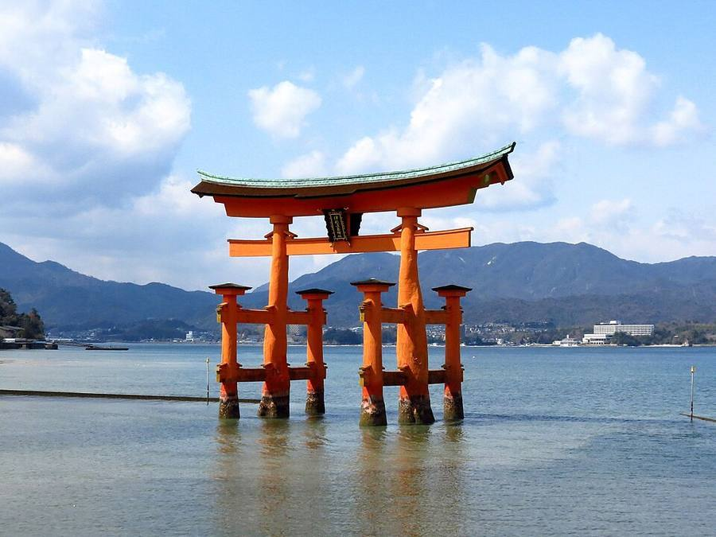
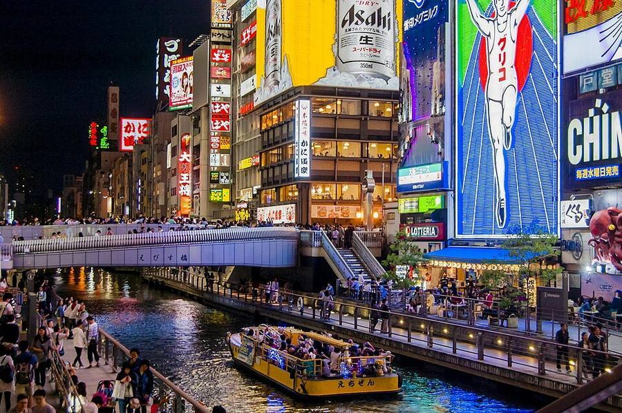
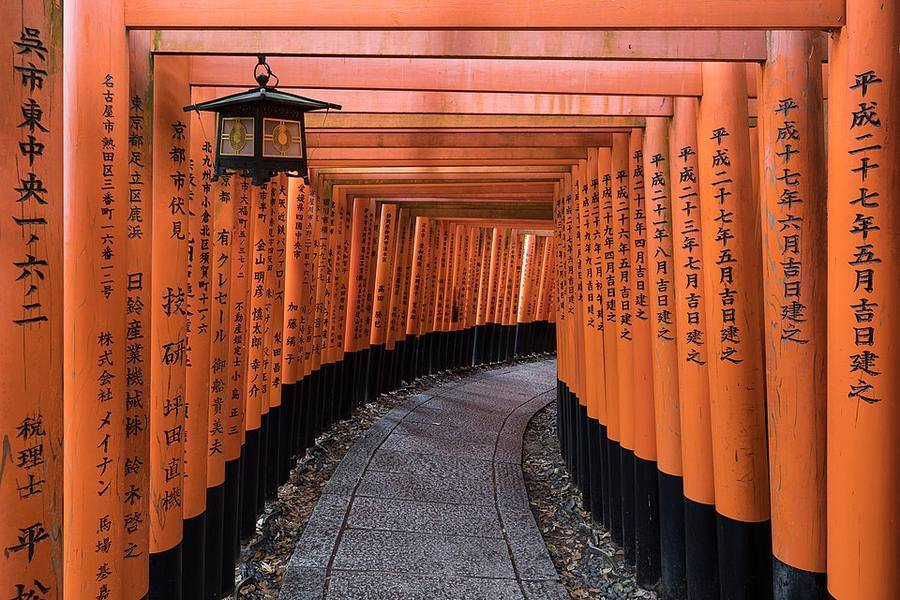
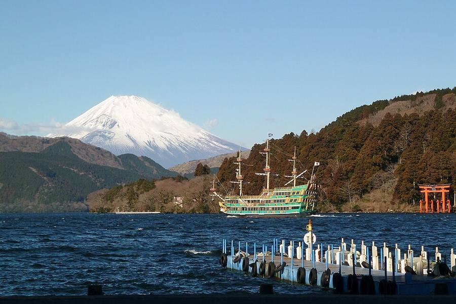
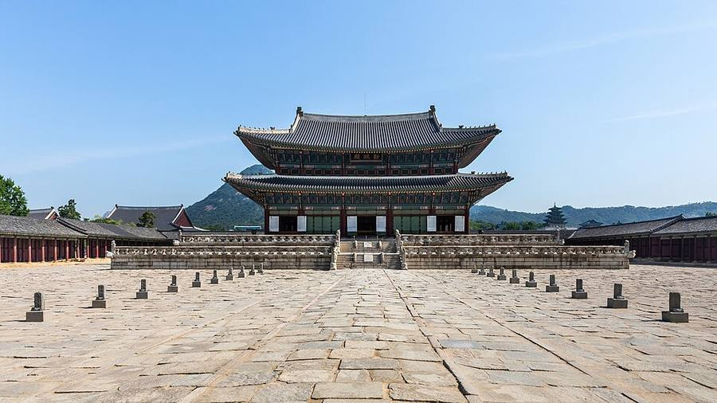
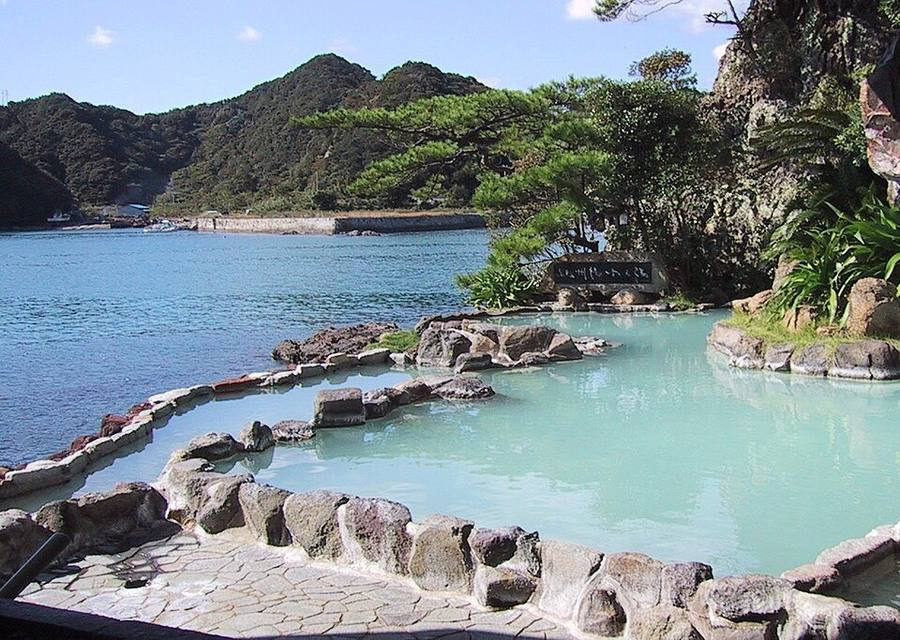
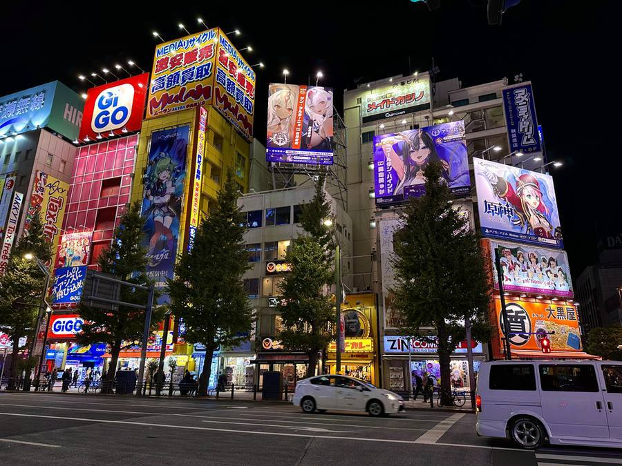

Japan × Südkorea
Vegane Onsen-Reise
Drei Wochen im Oktober: eine Woche Südkorea, zwei Wochen Japan. Pflanzenbasiert essen, ohne selbst kochen zu müssen, mit mehreren Onsen-Stopps und viel Anime/Gaming unterwegs.
Route auf der Karte
schematisch, nicht maßstabsgetreuÜberblick: Wann wo?
Hervorgehoben = Reisetag| Tag | Ort | Abfahrt | Ankunft | Sonst |
|---|---|---|---|---|
| Do 1.10. | Hamburg → Seoul | 04:45 am HAM 07:10 Abflug | Fr 06:20 ICN | LOT, 1 Stopp · Gepäckschalter schließt ca. 06:10 · komplett Reisetag |
| Fr 2.10. | Seoul | – | 09:00 Apartment | Gepäck abstellen · 19:00 Légume |
| Sa 3.10. | Seoul | – | – | 09:00 Gyeongbokgung · 14:00 Balwoo Gongyang |
| So 4.10. | Seoul | 06:30 City Hall (vorverlegt!) | ~16:00 zurück | DMZ-Tour · 18:00 SPAREX |
| Mo 5.10. | Seoul → Busan → Fähre | 07:50 KTX ✓ 22:30 Fähre | 10:26 Busan | Fähr-Check-in 16:30–18:30 · Nacht an Bord |
| Di 6.10. | Hakata → Beppu | 11:30 Zug „Sonic“ | 07:30 Hakata ~15:30 Beppu | Check-in Nagomitsuki |
| Mi 7.10. | Beppu | – | – | 09:30 Jigoku Meguri |
| Do 8.10. | Beppu → Hiroshima | 11:00 Check-out | ~14:15 Hiroshima | Sheraton Grand |
| Fr 9.10. | Hiroshima → Hirakata | ~15:00 (ab Miyajima) | ~17:00 Hirakata | 11:30 Miyajima-Fähre · Candeo Hotels |
| Sa 10.10. | Hirakata · USJ | 07:15 Hotel | ~08:30 USJ | Super Nintendo World |
| So 11.10. | Osaka | – | – | 12:00 Osaka Castle · Den Den Town |
| Mo 12.10. | Hirakata → Kyoto | 11:00 Check-out | ~12:00 Kyoto | 13:00 Kimono · Imu Hotel |
| Di 13.10. | Kyoto | – | – | 12:00 Arashiyama · 13:30 Shigetsu · 17:30 Fushimi Inari |
| Mi 14.10. | Kyoto | – | 16:30 zurück | 12:30 Kurama–Kibune · 17:45 Koffer-Versand |
| Do 15.10. | Kyoto → Hakone | – | ~17:50 Hakone | 11:00 Kinkaku-ji · 12:30 Manga-Museum · 18:30 Kaiseki |
| Fr 16.10. | Hakone → Tokyo | 15:30 Romancecar | ~17:30 Tokyo | 12:00 Seilbahn · Inn Oyado Matsumura |
| Sa 17.10. | Tokyo | – | – | 10:00 Shibuya SKY · 19:00 Monkey Magic |
| So 18.10. | Tokyo | – | – | 11:30 Senso-ji · Skytree & Akihabara |
| Mo 19.10. | Tokyo | – | – | Nakano & Akihabara |
| Di 20.10. | Tokyo → Seoul | 09:30 Asakusa 13:05 NRT | 15:40 ICN ~17:30 Urbanstay | Flug YP734 · Check-in Narita 11:00 |
| Mi 21.10. | Seoul | – | – | Freier Tag · abends packen |
| Do 22.10. | Seoul → Hamburg | 04:45 Urbanstay 08:10 Abflug | 06:10 am ICN 18:55 HAM | LOT, 1 Stopp · Flughafenbus 05:00 (ca. 70 Min.) · Check-in & Sicherheit ab 06:10 |
Vorher einrichten: Visit Japan Web & Apps
Visit Japan Web (vjw.digital.go.jp) funktioniert nur bei Flugankünften – für Fähranreisen gibt es dort keine Option, das Formular verlangt zwingend Fluggesellschaft und eine numerische Flugnummer. Da eure einzige Japan-Einreise am 6.10. per Fähre erfolgt, bringt euch der QR-Code hier nichts. Profil und Passdaten anlegen lohnt trotzdem (für spätere Flugreisen nach Japan), die eigentliche Einreise läuft am 6.10. aber über die klassische Zollerklärung, die an Bord der „New Camellia“ ausgeteilt wird.
Empfohlene Apps schon zuhause installieren: Welcome Suica (kontaktloses Bezahlen in Bahn/Bus/Konbini/Automaten direkt vom Handy, nur mit Apple Pay), NAVITIME (Japan-Navigation, oft besser als Google Maps für Zugverbindungen), GO (Taxi-App), Safety tips (offizielle Erdbeben-/Katastrophenwarn-App) und Payke (Barcode-Scanner, zeigt Inhaltsstoffe auf Deutsch/Englisch – praktisch für die Vegan-Kontrolle im Konbini).
Buchungs-Fahrplan
Was wann dran istHier stehen nur noch die offenen Punkte. Alles, was schon gebucht ist (Unterkünfte, Flüge, Fähre, Touren, K-ETA, eSIM), steht im Überblick ganz oben bzw. unter Unterkünfte und Züge & Tickets.
| Ghibli-Museum – ausverkauft | Nur noch Rückläufer | l-tike.com | Der Oktober war am Verkaufstag (10.9.) innerhalb von zehn Stunden komplett weg – alle 100 Zeitfenster, dazu beide Varianten der JTB-Bustour (die hätte ohnehin 27.500 ¥ p.P. gekostet). Der 19.10. läuft jetzt als Nakano/Akihabara-Tag. Bis 28.10. können Tickets zurückfallen, wenn Reservierungen nicht bezahlt werden – einmal täglich nachsehen, Einstieg über den Link, dann „Agree“ und bei October 2026 auf „Details“. |
| Japan: Bahntickets – kein JR Pass nötig | Nichts zu tun | vor Ort / NAVITIME | Durchgerechnet: Der 14-Tage-Pass (80.000 ¥) lohnt sich für eure Route nicht. Alle JR-Strecken einzeln kosten zusammen nur ~46.000 ¥ p.P. – ihr würdet ~34.000 ¥ p.P. (~230 €) draufzahlen, zu dritt rund 700 €. Dazu: euer Japan-Teil dauert 15 Tage, ein 14-Tage-Pass deckt den letzten Tag gar nicht. Einzeltickets erlauben außerdem den Nozomi (im Pass nur mit Aufpreis). Plan: Shinkansen am Automaten/per App kaufen, Nahverkehr über die Welcome Suica. Nichts vorab zu buchen. |
| Nintendo Museum, Uji – Bonus (optional) | Restplätze ab ca. 15.9. | museum-tickets.nintendo.com | Hauptlotterie für euren Oktober-Termin schon vorbei. Nur noch Restplätze möglich, freigeschaltet ca. 2 Wochen nach Ergebnis-Bekanntgabe (~Mitte September) – Seite ab dann regelmäßig checken. |
| Pokémon Café, Tokyo – Bonus (optional) | laufend prüfen | pokemon-cafe.jp | Regulärer Oktober-Verkauf war 1.9., 18 Uhr JST, meist in 1–2 Min. ausverkauft. Nur noch über Stornierungen möglich – werden laufend bis 22 Uhr JST am Vorabend freigegeben, Seite ab und zu checken. |
| KTX Seoul → Busan | Gebucht ✓ 3.10. | korail.com → My Ticket | KTX 015, Mo 5.10., 07:50 → 10:26, Economy, Wagen 12, Plätze 8A/8B/8C (rückwärts). 3 × 51.200 ₩ = 153.600 ₩ (ca. 100 €). Ticket-Abruf mit E-Mail + Passwort der Buchung, QR-Code-Screenshots gelten nicht. Montag ist ein Feiertag, Stornogebühren gelten (siehe Korail-Seite). |
| K-Pop-Dance-Class (Gangnam) | 4.10. So | Klook | Kleine Gruppengröße, 1–2 Wochen vorher buchen reicht meist aus. |
| Visit Japan Web – nur Profil, kein QR-Code möglich | Profile angelegt ✓ | vjw.digital.go.jp | Wichtiger Unterschied zu Flugreisen: VJW verlangt für den Einreiseplan zwingend Fluggesellschaft und eine numerische Flugnummer – für die Fähre „New Camellia“ gibt es diese Option nicht. Eure Profile mit Passdaten (alle drei) sind trotzdem angelegt, das nützt bei künftigen Flugreisen nach Japan. Für den 6.10. gilt stattdessen: Zollerklärung, die an Bord ausgeteilt wird, siehe Tagesplan. |
| Gyeongbokgung, Hangwachae & KWANGYA@SEOUL | 3.10. Sa | – | Kein Online-Ticket nötig, alles spontan vor Ort. Hangwachae notfalls telefonisch: +82 2-720-2802. |
| Balwoo Gongyang (1 Michelin-Stern) | Jetzt anrufen · 3.10. Sa, 14:00 | Tel. +82 2-733-2081 | Nur telefonische Reservierung, keine Online-Buchung. Ein paar Tage vorher anrufen. Mo–Sa 11:30–15:00 & 18:00–22:00, sonntags geschlossen – deshalb 3.10. (Sa), nicht 4.10. Lunch-Session 2 (13:30–14:50) passt zu eurer 14:00-Ankunft. |
| SPAREX Jjimjilbang | Keine Reservierung | – | 4.10. So, 18:00 – einfach hingehen. |
| Beppu Jigoku Meguri | 7.10. Mi | – | Sammelticket direkt an der Kasse, kein Vorverkauf nötig. |
| Kimono-Verleih Kyoto (Wunsch deiner Schwester) | 12.10. Mo, 13:00 | yumeyakata.com | Online vorab buchen – Mitte Oktober ist Herbst-Hochsaison in Kyoto, und Vorabbuchungen sind zusätzlich rabattiert. Yumeyakata Gojo: Kimono ab 3.080 ¥, Herren 4.180 ¥, Haarstyling 1.650–2.750 ¥ extra. Öffnungszeiten 10:00–17:30, letzter Einlass 16:00, Rückgabe bis 17:30 – deshalb ein früher Nachmittagstermin. Rückgabe am Folgetag kostet 1.100 ¥, per Post 1.650 ¥. Liegt drei Gehminuten vom Bahnhof Gojo, also eine Station vom Imu Hotel. Warum der 12.10.: Das ist euer einziger freier Nachmittag in Kyoto. Der 13.10. beginnt um 7:30 in Fushimi Inari, da haben die Verleihe noch zu, und der 14.10. ist die Kurama-Wanderung – in Zori-Sandalen keine gute Idee. |
| Kyoto Manga-Museum | 15.10. Do | kyotomm.jp | Tickets auch spontan vor Ort am Automaten. |
| Veganic Monkey Magic (im eigenen Inn, Tokyo) ✓ | Gebucht · 17.10. | 1. Kalender → 2. Formular | Reserviert für Sa 17.10., 19:00–22:30, 3 Personen. Menü: „Chef's recommended 16 sides set", 6.800 ¥ p.P. inkl. Steuer & Tischgebühr (ca. 20.400 ¥ gesamt), Dauer ca. 2 Std. Bezahlt ✓ (Zahlung am 6.9. vom Veranstalter bestätigt, 20.400 ¥, ca. 115 €). Mailverlauf im Gmail unter „Veganic Monkey Magic / Thank you for your reservation“. Beim Besuch: kein Parfüm, mindestens ein Getränk pro Person (Getränke sind nicht im Preis). Adresse: Oyado Matsumura, 1. Stock, 2-27-16 Asakusa. Storno bis 1 Woche vorher (bis 10.10.) mit 3.000 ¥ Gebühr, danach keine Erstattung. |
| Shigetsu (Tenryu-ji, Kyoto) | 13.10. Di | tenryuji.com | Reservierung reicht 3 Tage vorher. |
| Nintendo TOKYO & AIN SOPH.Ripple | 17.10. Sa | nintendo.co.jp / en.ain-soph.jp | Nintendo TOKYO: an Wochenenden teils Timed-Entry, vorher auf der Seite prüfen. AIN SOPH abends meist ohne Reservierung machbar. |
| Shibuya SKY | Gebucht ✓ 3.10. | shibuya-scramble-square.com | 3 × Erwachsene à 2.700 ¥ (8.100 ¥ gesamt), Sa 17.10., Einlass 10:00–10:19, Eingang im 14. Stock von Shibuya Scramble Square. Pro Person ein eigener QR-Code (Ticket-PDF, 3 Seiten, auf dem Handy speichern). Kostenlos stornierbar bis 16.10. über Webket „My Page“; Dach kann bei Unwetter schließen (dann Gratis-Storno vor Einlass). Taschen, Hüte, Kopfhörer und Selfie-Sticks nicht aufs Dach, Schließfächer im 46. Stock. |
| Pokémon Center Skytree & Vegan Ramen UZU (Ueno) | 18.10. So | shop.pokemon.co.jp / vegan-uzu.com | Beides ohne Reservierung, freier Eintritt in Shop & Restaurant. |
| Koffer per Takkyubin (Kyoto → Hakone) | 14.10. Mi, abends | Hotel-Rezeption / Konbini | Kein Vorab-Buchen nötig, einfach am Abend des 14.10. an der Rezeption oder bei 7-Eleven/FamilyMart aufgeben. Kommt erst am nächsten Tag an, also nicht am Reisetag selbst schicken. |
Route im Detail
22 Tage · 9 Stationen (Seoul 2×)Später Start (ab 6.10.): Ab dem 6.10. ist der Plan so gelegt, dass ihr ca. um 12 Uhr losgeht. Es ist nichts gestrichen, nur Zeiten und Reihenfolge haben sich verschoben (Hinweise mit „Spät-Start“). Fest bleibt, was gebucht ist: DMZ 4.10. um 6:30, KTX und Fähre am 5.10., Ankunft in Hakata am 6.10. (Fähre 7:30), USJ am 10.10. (Park ab 9:00), Shibuya SKY am 17.10. um 10:00, Monkey Magic am 17.10., die Flüge am 20.10. und 22.10. Früher als 12 Uhr müsst ihr deshalb nur an wenigen Tagen los: 6.10. (Fähre), 8.10. (Check-out), 10.10. (USJ), 15.10. (Ryokan-Dinner 18:30 ist fix) und 17.10. (SKY). Noch nicht gebuchte Züge und Reservierungen (Sonic, Shinkansen, Romancecar, Shigetsu, Wagashi, Kashikiri, Kimono) bitte mit den neuen Zeiten buchen. Frühstückszeiten der Ryokans in Beppu und Hakone vorher erfragen.
Wege-Hinweis: Unter den Stationen eines Tages steht jeweils eine grüne „Weg“-Zeile mit der Verbindung dorthin. Die meisten Strecken sind am 3.10. per Google Maps geprüft (Zeitangaben bleiben Richtwerte, „ca.“). Die genaue Route trotzdem kurz in Naver Map oder Google Maps (Korea) bzw. Google Maps oder NAVITIME (Japan) gegenprüfen. Karten: T-money in Korea, Suica/ICOCA/Pasmo in Japan (Details unter „Züge & Tickets“). Karten-Links in Korea öffnen Kakao Map (mit koreanischem Suchbegriff, getestet). Wo Kakao den Ort nicht fand (Camouflage, Dahlia Dining, Loving Hut Land Café, Vegenarang Busan, Café IMT), bleibt ein Google-Maps-Link.
Seoul
1.–5.10 · 4 Nächte
Komplette Apartment-Einheit (36 m², 2 Zimmer für 3 Personen), 33 Toegye-ro, Jung-gu – nur 200 m von Seoul Station, direkt an U-Bahn/KTX. Eigene Küche und Waschmaschine an Bord, Lotte Mart und mehrere Konbinis fußläufig fürs Selbstversorgen. 9,3/10 bei 23 Bewertungen.
Kein Frühstück inklusive (Apartment, kein Hotelservice) – dank Küche aber notfalls auch veganes Frühstück selbst machbar, sonst wie gehabt Zion Cafe (Insadong) oder Plant Cafe & Kitchen.
1.10DoAbflug – Reisetag
2.10FrAnkunft Seoul
3.10SaGyeongbokgung, Jogyesa & Myeongdong
4.10SoDMZ & JSA – Grenze zu Nordkorea
5.10MoFrüher KTX Seoul → Busan
Busan
5.10 · Nachmittag + Nachtfähre
In Busan übernachtet ihr nicht an Land, sondern an Bord der Nachtfähre nach Hakata (ab 22:30, an 7:30). Die bereits gebuchte Haeundae Guesthouse für 5.–6.10. muss storniert werden – das ist der Preis dafür, dass die Fähre im Plan bleibt. Dafür seid ihr am 6.10. schon vormittags in Beppu statt erst am späten Nachmittag.
Bei neun Stunden Überfahrt lohnt die Kabinenwahl: Die einfache 2. Klasse (12.000 ¥) ist ein offener Tatami-Raum, 2. Klasse mit Bett kostet 13.500 ¥ und ist das sinnvolle Minimum. 1. Klasse 15.000 ¥, Deluxe-Twin 20.000 ¥, Deluxe-Single 22.000 ¥.
5.10MoAnkunft Busan, Gamcheon & Nachtfähre
6.10DiAnkunft Hakata → Beppu
Beppu Onsen #1
6.–8.10 · 2 Nächte
Wie oben im Tagesplan – veganes Kaiseki mind. 3 Tage vorher anfragen.
6.10DiAnkunft Beppu
7.10MiJigoku Meguri & Onsen
8.10DoLetztes Bad & weiter nach Hiroshima
Hiroshima & Miyajima
8.–9.10 · 1 Nacht
Hotel Granvia Hiroshima war für eure Daten ausgebucht. Ersatz: 1 Minute vom Bahnhof entfernt (genauso praktisch für die Weiterfahrt), bestätigte vegane/vegetarische Optionen im Frühstücksbuffet „Bridges". 5★ und damit über dem Budget-Rahmen, aber nur 1 Nacht.
8.10DoAnkunft Hiroshima & Friedensgedenkpark
9.10FrMiyajima-Wanderung → weiter nach Osaka
Osaka
9.–12.10 · 3 Nächte
Direkt über dem Bahnhof Hirakatashi (Keihan-Linie), im selben Gebäude wie eine Mall mit Konbini. Wichtig für die Tagesplanung: Hirakata liegt zwischen Osaka und Kyoto, nicht in der Innenstadt – rechnet mit ca. 30 Min. nach Osaka-Zentrum, 50–65 Min. zum USJ und ca. 30 Min. nach Kyoto. Für den USJ-Tag (10.10.) also gegen 7:15 los, wenn ihr um 8:30 am Park sein wollt.
Vorteil: Der Umzug nach Kyoto am 12.10. wird dadurch sehr einfach – Keihan fährt direkt von Hirakatashi bis Gion-Shijo/Sanjo, ohne Umweg über Osaka.
9.10FrAnkunft, Dotonbori
10.10SaUniversal Studios Japan – Super Nintendo World
11.10SoOsaka Castle & Den Den Town
Kyoto
12.–15.10 · 3 Nächte
Vegan Minshuku Sanbiki Neko war das ursprünglich beste Match auf der ganzen Route, hatte für 3 Personen aber keine Zimmer mehr frei (nur wenige Zimmer insgesamt). Ersatz: zentral in Shimogyo, 5 Gehminuten von Shijo-Karasuma-Station, zwei vegane Frühstücks-Sets (Western/Japanese) sowie das hauseigene Restaurant „Vegetable Dishes OKI" mit weiteren veganen Optionen für Mittag/Abend.
12.10MoAnkunft Kyoto
13.10DiFushimi Inari & Arashiyama
14.10MiKurama & Kibune
15.10DoKinkaku-ji, Manga-Museum & weiter nach Hakone
Hakone Onsen #3
15.–16.10 · 1 Nacht
Ryokan von 1949 in einer ehemaligen Mitsubishi-Villa, Taisho-Architektur, 14 Zimmer, großer Garten – 3 Gehminuten vom Bahnhof Gora. Tattoos sind in allen Bädern erlaubt, ihr braucht also kein separates Privatbad mehr. Veganes Kaiseki ist vom Ryokan schriftlich bestätigt – Abendessen und Frühstück sind abgedeckt.
15.10DoAnkunft Hakone
16.10FrHakone-Seilbahn & weiter nach Tokyo
Tokyo
16.–20.10 · 4 NächteKomplett veganes Showa-Stil-Gästehaus von 1955, 10 Gehminuten zur Asakusa-Station, perfekt für den Skytree/Akihabara-Tag. Buchung ausschließlich über Airbnb – jedes Zimmer nur für 2 Personen (2 Futons), ihr braucht also zwei.
Verpflegung – wichtig: Trotz „Vegan Inn" gibt es kein Frühstück und keine Gästeküche (nur ein Kühlschrank im Zimmer). Das hauseigene Veganic Monkey Magic im Erdgeschoss ist ein veganes Kaiseki-Menü-Restaurant, aber nur Do–Sa geöffnet, nur mit Reservierung und Vorkasse, und hat gerade mal 7 Plätze am Tresen. Von euren vier Nächten passen also nur Fr 16.10. und Sa 17.10. – lohnt sich, dafür früh zu reservieren. Für die anderen Tage laufen Frühstück und Abendessen wie im Tagesplan über Konbini, HealthyTOKYO, AIN SOPH und T's TanTan.
Falls Shinjuku lieber als Asakusa: eigener Onsen mit Quellwasser aus Hakone mitten in Shinjuku, veganes japanisches Frühstück auf Anfrage möglich.
16.10FrAnkunft Tokyo
17.10SaShibuya & Harajuku
18.10SoAsakusa, Skytree & Akihabara
19.10MoNakano Broadway & Akihabara
20.10DiLetzter Tag Tokyo, Flug nach Seoul
Seoul – Rückkehr
20.–22.10 · 2 Nächte
Serviced Apartment in der Chungmu-ro (Jung-gu), direkt am Umsteigebahnhof Chungmuro (Linie 3/4). 15 Gehminuten nach Myeongdong und zum Cheonggyecheon – für den 21.10. mit Myeongdong-Shopping und Insadong-Mittag also alles zu Fuß oder eine Station. Die Studios haben eine eigene Küche, damit ist das vegane Frühstück an beiden Morgen gelöst, genau wie beim Luminouse X zu Beginn der Reise.
Für den Abflugtag der entscheidende Punkt: die Flughafenbus-Haltestelle liegt fünf Gehminuten entfernt. Mit drei Koffern spart euch das den Umstieg zum AREX. Kostenlose Stornierung bis 15.10.2026, Zahlung erst ab 13.10.2026 – falls sich am Reiseende doch noch etwas verschiebt, bleibt ihr flexibel.
20.10DiZweite Ankunft Seoul
21.10MiLetzter freier Tag
22.10DoFrüher Abflug
Trip-Checkliste
4 KategorienOnsen-Kit
- Kleines Handtuch (Modesty-Towel)
- Großes Badetuch fürs Zimmer
- Haargummi
- Kashikiri-Slots für Beppu & Kyoto vorab reservieren (2 von euch großflächig tätowiert – Sticker reichen dafür nicht). Hakone entfällt: Im Gora Kansuiro sind Tattoos in allen Bädern erlaubt.
Vegan-Kit
- Vegan-Karte (JP/KR) offline verfügbar
- HappyCow-App installiert
- Notfall-Snacks für Zugfahrten & Miyajima (Nüsse, Riegel)
- Ryokan-Reservierungen: vegane Mahlzeit bestätigt – Hakone ✓, Beppu noch offen
Dokumente
- Reisepass (gültig bis min. 6 Monate nach Rückreise)
- Visa-Status geprüft (für DE visumfrei bis 90 Tage in beiden Ländern – selbst verifizieren)
- Korea: K-ETA für alle drei genehmigt ✓ (deckt beide Einreisen ab, gültig bis 9.9.2029) – PDFs aufs Handy geladen
- Visit Japan Web: Profile/Passdaten angelegt (für künftige Flugreisen) ✓ – für die Fähren-Einreise am 6.10. gilt die Papier-Zollerklärung an Bord, kein VJW-QR-Code möglich
- Kein JR Pass nötig – Bahntickets einzeln über smartEX und JR Kyushu (siehe Züge & Tickets)
- Suica/Pasmo aufs Handy geladen (Japan) & T-money besorgen (Korea)
- Auslandskrankenversicherung
- Fähr-Ticket Busan–Hakata gebucht (Camellia Line, Nacht 5. auf 6.10.) ✓
- Notrufnummern notiert: Japan Polizei 110 / Feuerwehr & Rettung 119, Korea Polizei 112 / Feuerwehr & Rettung 119 (auch als Kontakt im Handy speichern)
Anime/Gaming & Technik
- Ghibli-Museum: ausverkauft – bis 28.10. täglich auf Rückläufer prüfen (l-tike.com)
- USJ-Ticket + Express Pass (Super Nintendo World/Donkey Kong) vorab online
- eSIM gekauft (Airalo Asialink o.ä., Japan + Korea in einer eSIM)
- Steckdosenadapter Typ A (JP & KR)
- Powerbank für lange Zugfahrten und Warteschlangen
- Bargeld in Yen & Won (viele kleine Onsen-Orte und Arcades sind kartenfrei)
- Reservierungen: Shigetsu (Kyoto), Balwoo Gongyang/Légume (Seoul)
- Kimono-Verleih Kyoto für den 12.10. online vorbuchen (Herbst-Hochsaison)
Zusatzinfos & Referenz
Zum Nachschlagen bei Bedarf, nicht der Reihe nachKostenschätzung
Pro Person, Mittelklasse
| Posten | Schätzung | Hinweis |
|---|---|---|
| Flug Hamburg ⇄ Seoul (Rundflug, Economy) | 440–650 € | Bereits gebucht. Günstiger als die vorherige Open-Jaw-Variante (750–1.050 €) – deshalb die Planänderung. |
| Flug Tokyo (Narita) → Seoul (Incheon) ✓ | ≈ 150 € | Gebucht: Air Premia YP734, 20.10., 13:05–15:40, Tarif Standard mit 23 kg Gepäck. 78.630 ¥ / 448 € für alle drei, also ~150 € p.P. Statt Haneda→Gimpo: Diese Strecke fliegen nur Vollanbieter (ANA, JAL, Korean Air, Asiana) und hätte 905 € für drei gekostet – Narita→Incheon spart 455 €. |
| Bahn Japan – Einzeltickets statt JR Pass | ≈ 310 € | ≈ 46.000 ¥ p.P. für alle JR-Strecken (Hakata→Beppu, Beppu→Hiroshima, Hiroshima→Osaka, Osaka→Kyoto, Kyoto→Odawara, Odawara→Tokyo, Nahverkehr, Miyajima-Fähre, Monorail Haneda). Der 14-Tage-JR-Pass kostet 80.000 ¥ und lohnt sich hier nicht – Details siehe Buchungsplan. |
| Nachtfähre Busan → Hakata ✓ | ≈ 65 € | Gebucht: „New Camellia“, Economy (Bed) im Gemeinschaftsraum, 75,55 US$ p.P. für die 9-stündige Nachtüberfahrt (ab 22:30, an 7:30). Dazu Hafengebühren (6.000 ₩ + 1.000 ₩ p.P.) und 800 ¥ Gepäck. Ersetzt eine Hotelnacht, die Busan-Guesthouse entfällt. Die schnelle Tagesfähre „Queen Beetle“ ist seit 2025 endgültig eingestellt. |
| KTX Seoul → Busan | 35–45 € | Vorab online buchbar (Korail Pass lohnt bei nur einer Fahrt nicht). |
| Unterkunft Japan – 11 „normale" Nächte | ≈ 495 € | Business-Hotel/gutes Guesthouse, Zimmer zu dritt geteilt, ~45 €/Nacht/Person. |
| Unterkunft Japan – 3 Onsen-Ryokan-Nächte | ≈ 420 € | Beppu (2×) + Hakone, meist inkl. Halbpension/Kaiseki – deshalb teurer, dafür ist Abendessen schon drin. |
| Unterkunft Südkorea – 6 Nächte | ≈ 240 € | Seoul 4 Nächte + Seoul-Rückkehr 2 Nächte, geteilt, ~40 €/Nacht/Person. Die Busan-Nacht entfällt – die verbringt ihr auf der Fähre (eigene Zeile oben). |
| Essen Japan (14 Tage) | ≈ 490 € | ~35 €/Tag – vegane Restaurants in Tokyo/Kyoto/Osaka liegen bei 10–18 € pro Mahlzeit, Onsen-Nächte haben Kaiseki bereits inklusive. |
| Essen Südkorea (7 Tage) | ≈ 175 € | ~25 €/Tag – Tempel-Food-Buffets ab ca. 10 €, günstiger als Japan. Ohne Légume, das steht separat weiter unten. |
| Légume, Seoul – Michelin-Menü (2.10.) ✓ | ≈ 130 € | Gebucht: 600.000 ₩ für alle drei, 19:00, Speisesaal. Kostenlos stornierbar bis 29.9., 23:59 Uhr. Steht bewusst als eigene Zeile: Der Korea-Essensetat rechnet mit ~25 €/Tag, dieser eine Abend sprengt also vier Tagesbudgets. |
| Eintritte, Onsen-Gebühren, Aktivitäten | ≈ 380 € | ~18 €/Tag Ø – Tempel, Jigoku-Meguri Beppu, Fushimi Inari & Co. sind meist gratis oder günstig. |
| Private-Onsen-Aufpreis (Kashikiri-Buro, 2× in Japan) | ≈ 25–40 € | Nur noch Beppu und Kyoto – in Hakone sind im Gora Kansuiro Tattoos in allen Bädern erlaubt, dort braucht ihr kein Privatbad. Privatbäder kosten statt der üblichen ~600–1.000 ¥ Eintritt eher 3.000–6.000 ¥ pro Zimmer/Stunde – zu dritt geteilt bleibt der Aufpreis pro Person überschaubar. |
| Kimono-Verleih Kyoto (12.10.) | ≈ 20–40 € | Kimono ab 3.080 ¥ p.P., Herren 4.180 ¥, Haarstyling 1.650–2.750 ¥ extra. Wie die ganze Tabelle: pro Person. |
| Anime/Gaming-Extras (USJ-Ticket + Express Pass empfohlen, Ghibli-Museum, Manga-Museum) | ≈ 140–200 € | USJ-Tagesticket ~60 €, Express Pass 70–130 € je nach Kategorie. Ghibli-Museum ~7 €, Kyoto Manga-Museum ~6 €. |
| Gesamt, alles inklusive | ≈ 3.400–3.900 € | Grobe Richtwerte pro Person. Souvenirs sind nicht enthalten – bei drei Anime- und Gaming-Fans in Nakano, Akihabara, Nintendo TOKYO und KWANGYA sind realistisch nochmal 150–400 € pro Person fällig, nach oben offen. Vor Buchung Flugpreise und Bahnpreise live prüfen. |
Unterkünfte auf einen Blick
Alle 9 Stationen, wer wo schläft
Eine Zeile pro Station, damit sofort klar ist: An welchem Tag seid ihr wo, und ist das Hotel schon fix? Gebucht = fertig, Offen = noch zu erledigen. Stand jetzt: alle Übernachtungen sind geklärt. Acht Hotelstationen sind gebucht, die Nacht vom 5. auf den 6.10. verbringt ihr auf der Fähre nach Japan – die Busan-Guesthouse ist storniert.
| Seoul 1.–5.10. · 4 Nächte | Luminouse X | Gebucht | Booking.com |
| Busan → Hakata Nacht 5. auf 6.10. | Kabine auf der „New Camellia“ Economy (Bed), Shared Room | Fähre gebucht | Camellia Line |
| Beppu 6.–8.10. · 2 Nächte | Nagomitsuki | Gebucht | Booking.com |
| Hiroshima 8.–9.10. · 1 Nacht | Sheraton Grand Hiroshima | Gebucht | Booking.com |
| Osaka 9.–12.10. · 3 Nächte | Candeo Hotels Osaka Hirakata Hirakatashi, zw. Osaka & Kyoto | Gebucht | candeohotels.com |
| Kyoto 12.–15.10. · 3 Nächte | Imu Hotel Kyoto | Gebucht | Booking.com |
| Hakone 15.–16.10. · 1 Nacht | Gora Kansuiro | Gebucht | Booking.com |
| Tokyo 16.–20.10. · 4 Nächte | Inn Oyado Matsumura (Asakusa) über Airbnb, 2 Zimmer | Gebucht | Zi. 203 / Zi. 205 |
| Seoul – Rückkehr 20.–22.10. · 2 Nächte | Urbanstay Myeongdong Chungmuro, Studio mit Küche | Gebucht | Booking.com |
Veganes Frühstück an jeder Station
Für jede Unterkunft die beste vegane Frühstücksadresse in Gehweite – auch dort, wo Frühstück schon mitgebucht ist. Zwei Muster fallen auf: In Korea öffnen Cafés selten vor 10 Uhr, deshalb läuft das Frühstück dort über die Küche in der Unterkunft. In Japan ist es umgekehrt – dort gibt es an fast jeder Station etwas ab 7 oder 8 Uhr.
| Seoul · Luminouse X 2.–5.10. | Eigene Küche | Beste Lösung: Apartment-Küche, der Lotte Mart ist 200 m entfernt. Koreanische Cafés machen fast nie vor 10 Uhr auf, und am 4.10. steht ihr wegen der DMZ-Tour ohnehin früh auf. Für Kaffee unterwegs: Café IMT, eine Kette, die meist ab 7:00 offen hat. |
| Fähre → Hakata 6.10. | Evah Dining | Nach der Nacht an Bord die erste richtige Mahlzeit. Evah Dining ist ein veganer Deli mit Filiale im Bahnhof Hakata – Bento und Gebäck zum Mitnehmen in den Sonic. Alternativ WHITE GLASS COFFEE (3-16-3 Hakata, ab 8:00, Morgenmenü bis 10:00, 4 Min. von Kushida-jinja-mae). |
| Beppu · Nagomitsuki 7.–8.10. | Ryokan inkl. | Veganes Ryokan-Frühstück ist vorbestellt. Falls ihr trotzdem raus wollt: Neo Vegetarian Kitchen Shalom – komplett pflanzlich, Morning 8:00–11:00 (Morgenmenü bis 10:30). Montags und am 1. + 3. Dienstag geschlossen – der 7.10. (Mi) und der 8.10. (Do) sind beide offen. |
| Hiroshima · Sheraton 9.10. | JoGeSaYu | JoGeSaYu, 2-7-1 Otemachi, Naka-ku – 100 % pflanzlich und seit Juli 2026 mit Frühstück ab 7:30. Zwei Sets für je 1.500 ¥: japanisches Omusubi-Set oder Pancakes. 2 Min. von der Straßenbahn Fukuromachi und damit auf dem Weg Richtung Miyajima. Unregelmäßige Ruhetage – am Vorabend auf Instagram prüfen. |
| Osaka · Candeo Hirakata 10.–12.10. | Konbini + Ausflug | Hirakata selbst hat morgens nichts Veganes – am 10.10. bleibt der Konbini in der Mall unter dem Hotel (Onigiri Ume/Kombu, Obst, Sojamilch). Am 11.10. dafür der ASAKARA GOOD STORE am Osaka Castle Park, öffnet 8:00 (dienstags zu), von Hirakata ca. 40 Min. |
| Kyoto · Imu Hotel 13.–15.10. | Hotel-Set + 3 Cafés | Das Imu Hotel hat ein veganes Frühstücks-Set. Drumherum ist Kyoto stark: Vegetable Dishes OKI Shijo ab 7:00 (letzte Bestellung 9:30, 4 Min. von der U-Bahn Shijō) – das Lokal steht ohnehin als Abendessen am 13.10. im Plan, geht also auch morgens. Dazu CHOICE (Karasuma, komplett vegan und glutenfrei, ab 7:30) und Veg Out am Fluss bei Shichijo (8:00–21:00). |
| Hakone · Gora Kansuiro 16.10. | Ryokan inkl. | Hier gibt es keine Alternative – Gora ist morgens gastronomisch leer, Nukafuku öffnet erst um 11:00 (mi & do zu). Das vegane Kaiseki-Frühstück im Ryokan ist die einzige Option, deshalb muss die Vorbestellung wirklich bestätigt sein. |
| Tokyo · Inn Oyado Matsumura 17.–20.10. | Vegan Store | Der beste Fund der ganzen Recherche: Vegan Store, 2-25-9 Asakusa – Japans erster rein veganer Konbini, täglich 6:00–23:00, montags geschlossen. Bento, Onigiri, Sandwiches, milchfreies Eis, dazu ein angeschlossenes Restaurant mit veganen und glutenfreien Gerichten. Liegt direkt in eurem Viertel und löst alle vier Morgen. Am 19.10. (Montag) ist zu – dann am Vortag vorkaufen. Zweite Adresse: Atomiyosowaka, 4-17-4 Kuramae, pflanzlich und glutenfrei, ab 9:00 (Sa/So bis 17:00). |
| Seoul · Urbanstay 21.–22.10. | Eigene Küche | Wieder die Küche im Studio – am 20.10. abends bei GS25 oder CU an der Chungmu-ro einkaufen. Für Kaffee vor der Tür: Café IMT Chungmuro (충무로3가 59-4), meist ab 7:00. Am Abflugtag praktisch: Reste aus dem Kühlschrank aufbrauchen statt ein Café suchen. |
Einkaufen in Korea – Supermärkte & Pflanzenmilch
Beide Seouler Unterkünfte haben eine Küche, und weil koreanische Cafés selten vor 10 Uhr öffnen, läuft das Frühstück dort über den eigenen Kühlschrank. Die gute Nachricht: Pflanzenmilch ist in Korea überall zu bekommen, sogar im 24-Stunden-Kiosk an der Ecke. Sojamilch (두유) ist ein koreanisches Grundnahrungsmittel und steht in jedem CU, GS25, 7-Eleven und Emart24.
| Lotte Mart Zettaplex Seoul Station | Karte | Der große Einkauf für die ersten vier Tage. 405 Hangang-daero, Jung-gu – 200 m vom Luminouse X. Täglich 10:00–24:00, also am Ankunftsabend erledigen, nicht morgens. Große Marts in Korea schließen per Gesetz am 2. und 4. Sonntag im Monat; im Oktober 2026 sind das der 11. und der 25. – euer Sonntag, der 4.10., ist ein normaler Öffnungstag. Vom Urbanstay (Chungmuro) sind es drei Stationen mit der Linie 4. |
| CU · GS25 · 7-Eleven · Emart24 | überall | 24 Stunden offen, an jeder Ecke – auch direkt an der Chungmu-ro beim Urbanstay. Deckt alles fürs Frühstück ab: Sojamilch, Mandelmilch, Bananen, Nüsse, Instant-Reis, Nori. Für zwei Morgen am Reiseende reicht das völlig, dafür braucht ihr keinen Supermarkt. |
| Namdaemun-Markt | Karte | Zwischen beiden Unterkünften gelegen. Für Obst, Nüsse und Trockenfrüchte deutlich billiger und besser als der Supermarkt – lohnt für den Proviant am 5.10., bevor ihr auf die Nachtfähre geht. |
Das Etikett lesen – die wichtigsten Wörter
Zeigt das hier notfalls im Laden auf dem Handy. Die linke Spalte sucht ihr, die rechte meidet ihr.
| 두유 dooyu | suchen | Sojamilch, das koreanische Standardprodukt. Klassische Marken: 베지밀 (Vegemil) und 삼육두유 (Sahmyook). Achtung, es gibt Sorten mit Milchzusatz – prüft, ob 우유 in der Zutatenliste steht. |
| 귀리 음료 gwiri eumryo | suchen | Hafermilch. Oatly ist in Korea verbreitet, dazu koreanische Eigenmarken. |
| 아몬드 브리즈 Almond Breeze | suchen | Mandelmilch, in fast jedem Kiosk. Die ungesüßte Variante heißt 무가당. |
| 두부 / 즉석밥 | suchen | Tofu und Instant-Reis (Marke 햇반). Beides überall, beides zuverlässig vegan – die Basis für ein schnelles Frühstück in der Wohnung. |
| 비건 bigeon | suchen | Das Wort „vegan“ auf Koreanisch. Es gibt ein offizielles koreanisches Vegan-Siegel, das auf immer mehr Produkten auftaucht. |
| 젓갈 jeotgal | meiden | Der wichtigste Fallstrick. Fermentierte Shrimps oder Sardellen – steckt in fast jedem gekauften Kimchi. Wollt ihr Kimchi, braucht ihr ausdrücklich 비건 김치 oder 사찰 김치 (Tempel-Kimchi). |
| 우유 / 계란 / 꿀 | meiden | Milch, Ei, Honig. Die drei häufigsten versteckten Zutaten in koreanischem Gebäck und Aufstrichen. |
| 멸치 / 가쓰오 | meiden | Sardelle und Bonito – die Brühenbasis in Instant-Suppen und Ramyeon. Dasselbe Problem wie bei der japanischen Dashi. |
Züge & Tickets – wann und wo
Die wichtigste Regel für Japan: Sitzplatzreservierungen im Shinkansen und in Limited Express öffnen genau einen Monat vor Abfahrt um 10:00 JST (3:00 nachts deutscher Zeit). Für eure Termine heißt das: Alle Japan-Strecken werden zwischen dem 6.9. und dem 16.9. buchbar – ihr könnt sie also alle schon jetzt von zu Hause aus reservieren.
Zwingend nötig ist das nicht: Auf allen euren Strecken gibt es Nicht-reservierte Wagen (自由席), in die man einfach einsteigt. Aber zu dritt mit Koffern im Oktober – der Hauptreisezeit – lohnt die Reservierung. Gebucht wird über smartEX (Tokaido/Sanyo/Kyushu-Shinkansen, englische App, ausländische Kreditkarten, kostenlos) und für die Sonic-Strecken über JR Kyushu Online, wo Frühbucher zusätzlich Rabatte bekommen.
| KTX Seoul → Busan 5.10. Mo | Gebucht ✓ | korail.com | KTX 015, 07:50 → 10:26, Wagen 12, Plätze 8A–8C. 3 × 51.200 ₩ (ca. 100 €). Ticket-QR unter „My Ticket“ mit E-Mail + Passwort. Die späteren KTX waren am Feiertag für 3 Personen ausverkauft. |
| Sonic Hakata → Beppu 6.10. Di, ca. 11:30 | Jetzt buchbar | JR Kyushu Online | Limited Express „Sonic“, ca. 2 Std. Frühbucherrabatt bei Online-Buchung im Voraus. Ihr kommt um 7:30 mit der Fähre an – plant Puffer für Einreise und den Weg vom Hafen zum Bahnhof (3 km), also keinen Zug vor 9:30 nehmen. |
| Beppu → Hiroshima 8.10. Do | Jetzt buchbar | JR Kyushu / smartEX | Zwei Teile: Sonic bis Kokura (ca. 1 Std. 20), dann Sanyo-Shinkansen bis Hiroshima (ca. 50 Min.). Beide Abschnitte getrennt buchen, am Umstiegsbahnhof Kokura 20 Min. Puffer lassen. |
| Hiroshima → Osaka 9.10. Fr | Jetzt buchbar | smartEX | Sanyo-Shinkansen bis Shin-Osaka, ca. 1 Std. 30. Nozomi ist erlaubt – ihr habt keinen JR Pass, der diese Züge ausschließen würde. Weiter nach Hirakatashi mit der Keihan-Linie. |
| Hirakata → Kyoto 12.10. Mo | Keine Buchung | Keihan-Linie | Direktverbindung, ca. 30 Min., keine Reservierung. Einfach mit ICOCA oder Suica durchs Drehkreuz. Gilt genauso für alle Nahverkehrsfahrten in Kyoto und Osaka. |
| Kyoto → Odawara 15.10. Do, ca. 15:00 | Ab 15.9. buchbar | smartEX | Achtung, häufige Falle: Der Nozomi hält nicht in Odawara. Ihr braucht einen Hikari oder Kodama, ca. 1 Std. 45. Wenn ihr blind den schnellsten Zug bucht, landet ihr in Shin-Yokohama und müsst zurückfahren. |
| Hakone-Nahverkehr 15.–16.10. | Vor Ort kaufen | Hakone Freepass | Deckt Tozan-Bergbahn, Standseilbahn, Seilbahn zum Owakudani, Schiffe auf dem Ashi-See und Busse ab – genau euer Programm am 16.10. Zwei-Tage-Version ab Odawara ca. 5.000 ¥. Am Bahnhof Odawara bei der Ankunft kaufen. |
| Hakone → Tokyo 16.10. Fr, ca. 15:30 | Ab 16.9. buchbar | Odakyu Romancecar | Der Romancecar fährt ab Hakone-Yumoto direkt bis Shinjuku, ca. 1 Std. 25, und ist reservierungspflichtig. Panoramaplätze ganz vorn sind schnell weg. Alternative ohne Reservierung: Odawara → Tokyo mit dem Shinkansen, 35 Min. |
| Asakusa → Narita 20.10. Di, 9:30 | Keine Buchung | Keisei Access Express | Fährt direkt ab Bahnhof Asakusa, kein Umstieg, ca. 80 Min., Ticket am Automaten. Ihr wohnt an der günstigsten Station Tokios für Narita. Schneller wäre der Skyliner ab Ueno – der kostet mehr und ihr müsstet erst nach Ueno. |
Zwei Karten, die alles andere abdecken
Japan: Suica oder Pasmo aufs Handy laden (Apple Wallet kann das direkt, ohne physische Karte). Damit fahrt ihr jede U-Bahn, jeden Bus und jeden Nahverkehrszug, ohne je ein Ticket zu kaufen – und zahlt im Konbini gleich mit. Korea: dasselbe mit einer T-money-Karte, gibt es in jedem CU oder GS25 für ca. 3.000 ₩.
Für die Fahrtensuche unterwegs: NAVITIME oder Google Maps – beide kennen japanische Zugpläne minutengenau, inklusive Gleisnummer.
Onsen-Stopps im Überblick

Beppu
„Höllen"-Besichtigung plus Bäder von der offiziellen Tattoo-Friendly-Liste der Stadt, sonst privates Ryokan-Bad.
Kyoto (nach Kurama-Wanderung)
Wanderung Kurama–Kibune, gebadet wird danach privat in Kyoto (Kashikiri-Buro) statt im tattoo-restriktiven Freiluftbecken.
Hakone
Gora Kansuiro – historisches Ryokan, in dem Tattoos in allen Bädern erlaubt sind. Kein Privatbad nötig, kein Cover-up. Vegan vorab anfragen.
Seoul (Bonus)
Kein Onsen im engeren Sinn, aber Jjimjilbang-Kultur als koreanisches Äquivalent – SPAREX oder Siloam Sauna, seit 2025 durchgehend tattoo-freundlich.
Anime & Gaming im Überblick
Statt Kamakura & Nara eingeplant

Yongsan & Hongdae, Seoul
Elektronik-/Gaming-Markt plus PC-Bang-Cafés für eine spontane Zocker-Runde. Yongsan wurde am 3.10. durch Myeongdong ersetzt, Hongdae bleibt.
Universal Studios Osaka
Super Nintendo World + neue Donkey Kong Country – ganzer Tag, Express Pass vorab buchen.
Den Den Town, Osaka
Osakas Akihabara, entspannter und weniger touristisch.
Kyoto Manga-Museum
Alte Grundschule voller Manga zum Schmökern, gute Ergänzung zu Kinkaku-ji.
Akihabara, Tokyo
Arcades, Mandarake, Super Potato – der Klassiker, halber bis ganzer Tag.
Nakano Broadway (Ghibli-Ersatz)
Ersatz für das ausverkaufte Ghibli-Museum: Mandarake über vier Etagen, dazu Super Potato und die Spielhallen. Der Otaku-Tag zum Abschluss.
Nintendo Museum, Uji (bei Kyoto) – Bonus
Echtes Nintendo-Museum (nicht der Store!), ca. 20–30 Min. von Kyoto. Läuft nur über eine monatliche Ticket-Lotterie via Nintendo-Account – die Anmeldephase für euren Oktober-Termin ist bereits vorbei. Einzige Chance: Restplätze, die ca. 2 Wochen nach der Ergebnis-Bekanntgabe freigeschaltet werden (für Oktober ca. ab Mitte September) – museum-tickets.nintendo.com im Auge behalten. Falls es klappt, passt es am ehesten in einen eurer Kyoto-Tage (12.–15.10.).
Pokémon Café, Tokyo – Bonus
Themen-Café (nicht der Store am Skytree!), komplett reservierungspflichtig. Ganzer Folgemonat öffnet am 1. um 18 Uhr JST und ist oft in 1–2 Minuten weg – der Oktober-Termin ist damit schon durch. Stornierungen werden laufend bis 22 Uhr JST am Vorabend freigegeben, lohnt sich also trotzdem regelmäßig auf pokemon-cafe.jp zu schauen.
K-Pop-Stopps im Überblick
Für die Schwester eingebaut
KWANGYA@SEOUL, Seongsu
Aktueller SM-Entertainment-Flagship-Store (seit HYBE Insight 2023 geschlossen hat, der beste Ersatz) – AR-Experience-Zone, Merch von aespa, NCT, Red Velvet & Co. Freier Eintritt, gut mit Tag 3 (Yongsan/Hongdae) kombinierbar.
K-Star Road, Gangnam
„Gangnamdols"-Bärenstatuen für BTS, EXO, Kara & Co. entlang der Straße, kostenlos, gut zu Fuß mit dem Namsan-Tag zu verbinden.
K-Pop-Dance-Class
Buchbare Tanzstunde mit echten Choreografien (Klook, Anfänger willkommen) – lässt sich an Tag 4 vor oder nach dem Namsan-Programm einschieben.
Hongdae
Ohnehin am Plan (Tag 3 Abend) – Straßen-Busking-Szene, oft auch spontane K-Pop-Cover-Performances.
Kurz gecheckt: HYBE Insight (BTS-Museum) und das ursprüngliche SMTOWN@coexartium sind beide nicht mehr geöffnet – KWANGYA@SEOUL in Seongsu ist aktuell (Stand 2026) der verlässlichste Ersatz. Für Konzerte/Musikshow-Aufnahmen (M Countdown, Music Bank) müsste man sich Wochen vorher um Publikumstickets bemühen, meist per Fanclub-Verlosung – für einen 5-Tage-Aufenthalt eher unrealistisch, deshalb nicht fest eingeplant.
Japan: Do's & Don'ts
Damit's kein teures Souvenir wird
| Rauchen außerhalb Raucherzonen | ≈ 2.000 ¥ | Sofort-Bußgeld z.B. in Chiyoda (Tokyo), bei Wiederholung/anderen Bezirken bis 300.000 ¥. Nur in markierten Smoking Areas rauchen. |
| Müll auf die Straße werfen | 2.000–30.000 ¥ | Shibuya kassiert seit Juni 2026 sofort 2.000 ¥ vor Ort. Öffentliche Mülleimer sind selten – eigenen Müll tagsüber mitnehmen. |
| Betrunken Fahrrad fahren | bis 500.000 ¥ | Seit Nov. 2024 gilt die gleiche 0,03 %-Promillegrenze wie fürs Auto, im Extremfall bis 3 Jahre Haft. Nach dem Onsen-Bier lieber laufen. |
| Alkohol auf der Straße, Shibuya | Verbot | Ganzjähriges Straßentrink-Verbot rund um Shibuya Station, 18–5 Uhr. |
| Drogen & bestimmte Medikamente | Nulltoleranz | Auch in Deutschland legale CBD-Produkte oder manche verschreibungspflichtigen Medikamente (z.B. mit Pseudoephedrin/Amphetamin-Basis) können in Japan illegal sein. Im Zweifel vorher offizielle Zolldokumentation (Yakkan Shoumei) prüfen. |
Unterwegs
- Rolltreppe: in Tokyo links stehen, in Osaka rechts – Gegenteil sorgt für Stau
- In der Bahn leise sein, keine Handytelefonate, Klingelton aus
- Nicht im Gehen essen (v.a. in Kyoto/Kamakura unbeliebt), lieber am Stand stehen bleiben
- Öffentliche Mülleimer sind rar – Müll tagsüber selbst mitnehmen
Essen
- Essstäbchen nie senkrecht in den Reis stecken (erinnert an Totenrituale)
- Kein Essen von Stäbchen zu Stäbchen reichen (ebenfalls Totenritus)
- Trinkgeld ist unüblich und kann sogar als unhöflich gelten
- Beim Bezahlen: Geld/Karte aufs Tablett legen statt in die Hand drücken
Ryokan, Tempel & Onsen
- Schuhe ausziehen: Ryokan, Tempel, manche Restaurants, sogar Kapselhotels
- Onsen: vor dem Baden gründlich am Waschplatz abduschen
- Handtuch bleibt außerhalb des Wasserbeckens (auf dem Kopf oder am Beckenrand ablegen)
- Tattoos: siehe Hinweis oben – Kashikiri-Privatbad nutzen statt Cover-up-Sticker
Allgemein
- Bargeld einstecken – viele kleine Orte (Onsen-Städte, Tempel-Kassen) sind kartenfrei
- Verbeugen statt Händeschütteln ist üblich, ein Nicken reicht als Tourist völlig
- Laut telefonieren/sprechen in Restaurants oder auf der Straße fällt negativ auf
Nützliche Sätze für unterwegs
Koreanisch & Japanisch
Grundausstattung fürs Unterwegssein – die vegane Karte weiter unten ist speziell fürs Bestellen, diese Sätze hier für alles andere. Reihenfolge folgt der Reiseroute: erst Koreanisch, dann Japanisch.
| Hallo | 안녕하세요Annyeonghaseyo |
| Danke | 감사합니다Gamsahamnida |
| Entschuldigung | 죄송합니다Joesonghamnida |
| Das hier, bitte (beim Bestellen/Kaufen) | 이거 주세요Igeo juseyo |
| Sprechen Sie Englisch? | 영어 할 수 있어요?Yeongeo hal su isseoyo? |
| Wo ist die Toilette? | 화장실이 어디예요?Hwajangsiri eodiyeyo? |
| Was kostet das? | 이거 얼마예요?Igeo eolmayeyo? |
| Die Rechnung, bitte | 계산해 주세요Gyesanhae juseyo |
| Ich verstehe nicht | 이해가 안 돼요Ihaega an dwaeyo |
| Bitte helfen Sie mir (Notfall) | 도와주세요Dowajuseyo |
| Prost! | 건배!Geonbae! |
| Lecker! | 맛있어요Masisseoyo |
| Hallo (tagsüber) | こんにちはKonnichiwa |
| Danke | ありがとうございますArigatou gozaimasu |
| Entschuldigung / Verzeihung | すみませんSumimasen |
| Bitte (beim Bestellen/Erbitten) | お願いしますOnegaishimasu |
| Sprechen Sie Englisch? | 英語を話せますか？Eigo o hanasemasu ka? |
| Wo ist die Toilette? | トイレはどこですか？Toire wa doko desu ka? |
| Was kostet das? | これはいくらですか？Kore wa ikura desu ka? |
| Die Rechnung, bitte | お会計お願いしますOkaikei onegaishimasu |
| Ich verstehe nicht | わかりませんWakarimasen |
| Bitte helfen Sie mir (Notfall) | 助けてくださいTasukete kudasai |
| Prost! | 乾杯！Kanpai! |
| Lecker! | おいしいOishii |
Vegan-Strategie
Schwierige Tage, Konbini & Mini-Rezepte
Das Grundproblem gilt nur noch halb. Alle Frühstücks-Slots im Tagesplan sind an die Öffnungszeiten angepasst – aber die Recherche zu den Frühstücksadressen hat gezeigt, dass Japan und Korea sich hier gegensätzlich verhalten.
In Japan gibt es an fast jeder Station etwas Frühes: Vegan Store Asakusa ab 6:00 (Japans erster rein veganer Konbini, montags zu), Vegetable Dishes OKI Kyoto ab 7:00, JoGeSaYu Hiroshima ab 7:30, CHOICE Kyoto ab 7:30, dazu HealthyTOKYO, Veg Out Kyoto, Neo Vegetarian Kitchen Shalom in Beppu und ASAKARA GOOD STORE in Osaka jeweils ab 8:00.
In Korea bleibt es dagegen dabei: vor 10 Uhr öffnet praktisch nichts. Genau deshalb haben beide Seouler Unterkünfte eine Küche – siehe Einkaufen in Korea.
| Nachtfähre Busan → Hakata | Nacht 5. auf 6.10. | 9 Std. an Bord ohne veganes Angebot | Das ist die längste Lücke der ganzen Reise: letztes sicheres Essen am 5.10. um 17:00 bei Soban Vegan, nächstes am 6.10. gegen 9:00 in Hakata. Vor dem Einchecken Proviant kaufen – am Busan Station gibt es GS25/CU für Obst, Nüsse, Sojamilch und Instant-Reis. An Bord gibt es realistisch nur Instant-Nudeln mit Fleischbrühe, darauf nicht verlassen. |
| Beppu | 6.–8.10. | 3 Tage, vegan insgesamt sehr dünn | Strategie: in Hakata vorladen. Vor dem Zug nach Beppu bei Evah Dining/BUGORO All Vegan (beide im Bahnhof Hakata) gleich für 1–2 Tage Proviant mitkaufen – die Auswahl dort ist deutlich größer als in Beppu. Vor Ort: YouMe Town Beppu (Einkaufszentrum am Wasser) hat einen Supermarkt plus eine Kaldi Coffee Farm-Filiale (Importwaren – Pflanzenmilch, Nussmus, Snacks aus dem Ausland, oft zuverlässiger als japanische Standardware). Sonst gilt der normale Konbini-Spickzettel unten. |
| Miyajima | 8.–9.10. | Insel mit sehr wenig veganer Auswahl | Tachibana ist freitags zu, Big Apple nur 11–16 Uhr. Lösung: Snacks von der Omotesando (gegrillter Mais, Yaki-Mochi), Konbini-Bento aus Hiroshima mitnehmen, und richtig essen bei Vegan Peace OTEMACHI in Hiroshima (nur mo & di zu). |
| Universal Studios Japan | 10.10. Sa | Parkessen praktisch nie vegan | Rucksack packen: Onigiri (Ume/Kombu), Riegel, Obst, Nüsse, 2 Flaschen Wasser p.P. Im Park gibt es Popcorn ohne Butter, Pommes und Edamame als Notlösung. Wiedereinlass ist erlaubt – wer will, isst mittags kurz außerhalb. |
| Kurama–Kibune-Wanderung | 14.10. Mi | Bergdörfer ohne vegane Küche | Am Vorabend im Kyoto-Konbini einkaufen: 2 Onigiri p.P., Edamame, Trockenobst, Nüsse, Salzgebäck. Die Kaiseki-Restaurants in Kibune sind teuer und fast immer mit Dashi – nicht einplanen. |
| Nakano/Akihabara-Tag | 19.10. Mo | Vegan Store montags zu | Der Vegan Store in Asakusa hat montags geschlossen – am Sonntag vorkaufen oder Konbini. Ab 11:00 ist es dann entspannt: Komaki Shokudo am Bahnhof Akihabara ist rein vegan (Shojin Ryori, mo–fr 11:00–15:30 und 17:00–19:30) und deckt Mittag und Abend ab. |
Ziemlich sicher vegan
- Onigiri Ume (梅) – eingelegte Pflaume, der Klassiker
- Onigiri Kombu (昆布) – Seetang, meist ohne Dashi
- Edamame (gesalzene Sojabohnen), tiefgekühlt oder frisch
- Geröstete Nüsse, Trockenobst, frisches Obst
- Daifuku/Mochi mit Anko (roter Bohnenpaste)
- Sojamilch (Kikkoman), Soja-Latte, Barista-Sojamilch
- Instant-Miso mit Wakame – Vorsicht, oft Dashi: Etikett scannen
Sieht vegan aus, ist es meist nicht
- Fast alle Suppen & Nudelbrühen – Dashi aus Bonito-Fisch (かつお)
- Zaru Soba: Nudeln vegan, aber die Tsuyu-Sauce nicht
- Inari-Zushi – Tofutasche oft in Dashi eingelegt
- Senbei (Reiscracker) – häufig mit Garnele oder Bonito
- Gemüse-Tempura – Teig oft mit Ei
- Brot & Sandwiches – fast immer Milchpulver oder Ei
Die Wörter, die ihr scannen müsst
- だし / 出汁 – Dashi (Fischbrühe)
- かつお / 鰹 – Bonito
- 煮干し – getrocknete Sardinen
- ゼラチン – Gelatine
- はちみつ – Honig
- 乳 / 牛乳 – Milch · 卵 – Ei
- → Mit der Payke-App (steht schon in der Checkliste) den Barcode scannen, sie übersetzt die Zutatenliste
Korea: CU, GS25, Emart24
- Gim (김) – geröstete Seetangblätter, meist nur Salz & Sesamöl
- Sojamilch (두유), gerösteter Mais-/Gerstentee
- Gedämpfte Süßkartoffel, Obstbecher, Nüsse
- Achtung Kimchi: fast immer mit Fischsauce (액젓) oder Krill (젓갈) – veganes „Tempel-Kimchi" gibt es im Bio-Regal
- Dreiecks-Gimbap: Füllung fast immer Thunfisch/Fleisch – Etikett prüfen
Euer Seouler Apartment (Luminouse X) hat eine eigene Küche und liegt 200 m vom Lotte Mart – damit sind Frühstück und Ankunftsabend gelöst, ohne auf Café-Öffnungszeiten angewiesen zu sein. Drei Sachen, die mit koreanischen Supermarkt-Zutaten in 15 Minuten fertig sind:
1 · Bibimbap-Schüssel (15 Min.)
- Fertigreis (즉석밥, Mikrowelle 2 Min.)
- Sojasprossen (콩나물) 3 Min. blanchieren, mit Sesamöl + Salz
- Spinat oder Zucchini kurz anbraten
- Gochujang (고추장) + 1 TL Sesamöl als Sauce verrühren
- Alles auf den Reis, Sesam drüber
- Check: Gochujang ist meist vegan, manche Marken enthalten Rinderextrakt
2 · Doenjang-Gemüsetopf (20 Min.)
- 1 EL Doenjang (된장, Sojabohnenpaste) in 500 ml Wasser auflösen
- Zucchini, Kartoffel, Zwiebel, Tofu würfeln, 12 Min. köcheln
- Am Ende Frühlingszwiebel + 1 TL Gochugaru (Chiliflocken)
- Mit Fertigreis servieren
- Doenjang ist traditionell rein pflanzlich – Etikett auf Anchovis-Zusatz prüfen
3 · Frühstücks-Gimbap to go (10 Min.)
- Fertigreis mit 1 TL Sesamöl + Salz mischen
- Auf ein Gim-Blatt streichen, Streifen von Karotte, Gurke und marinierten Rettich (단무지) drauf
- Fest rollen, in Scheiben schneiden, in Frischhaltefolie
- Perfekt als Proviant für den DMZ-Tag oder die KTX-Fahrt nach Busan
Einkaufszettel Lotte Mart
- 즉석밥 Fertigreis · 두부 Tofu · 콩나물 Sojasprossen
- 고추장 Gochujang · 된장 Doenjang · 참기름 Sesamöl
- 김 Gim-Blätter · 단무지 eingelegter Rettich
- 두유 Sojamilch · Obst · Nüsse
- Für Japan-Proviant: Riegel & Nüsse hier billiger als am Flughafen
Kein Herd, aber fast jedes Ryokan-Zimmer hat einen Wasserkocher für Tee – reicht für die erste Kombo. Rest ist reines Zusammenstellen aus Konbini/YouMe Town/Kaldi, kein Werkzeug nötig.
1 · Miso-Tofu-Becher (5 Min., nur Wasserkocher)
- Instant-Misosuppe auf Kombu-Dashi-Basis (Etikett: kein 鰹だし/Katsuo)
- Gewürfelten kalten Tofu aus der Kühltheke reingeben
- Mit kochendem Wasser aus dem Zimmer-Wasserkocher aufgießen
- Frühlingszwiebel drüber, falls vorhanden
2 · Onigiri-Edamame-Schale (kalt, 0 Min.)
- 2 Onigiri (Ume/Kombu) grob zerkrümeln
- Portion Edamame (vorgekocht, Konbini-Kühlregal) dazu
- Sesam-Dressing aus der Salat-Ecke drüber (Etikett: meist ohne Fisch, kurz prüfen)
- Fühlt sich mehr nach Schüssel an als nach Snack
3 · Kaldi-Brot-Teller (0 Min.)
- Konbini-Baguette oder Brötchen
- Nussmus oder Hummus von der Kaldi-Filiale in YouMe Town
- Banane in Scheiben oder anderes Obst dazu
- Süß-herzhafte Kombination, braucht keinen Kühlschrank
4 · Warmer Haferbrei (5 Min., nur Wasserkocher)
- Haferflocken (Kaldi oder größerer Supermarkt) in eine Tasse
- Heiße Pflanzenmilch oder Wasser drüber, 3–4 Min. quellen lassen
- Banane in Scheiben + etwas Zimt, falls vorhanden
- Warmes Frühstück ganz ohne Herd
5 · Vegane Retort-Curry-Schale (5 Min., nur Wasserkocher)
- Kaldi führt teils importierte vegane Curry-Beutel
- Etikett prüfen: normales japanisches Retort-Curry hat fast immer Fleischextrakt
- Beutel im heißen Wasser aus dem Kocher erwärmen
- Über Fertigreis aus dem Konbini gießen
6 · Fertige Gemüse-Maki (0 Min., einfach dazukaufen)
- Kappa-Maki (Gurke) oder Kanpyo-Maki (Kürbisstreifen) aus der Kühltheke
- Anders als die meisten Sushi-Sorten meist ohne Fisch
- Braucht kein Zusammenstellen, einfach als Beilage dazu
Vegan-Karte zum Vorzeigen
Screenshot oder ausdrucken
Gepäckliste
Kleidung, Hygiene, Elektronik
Allgemeine Grundausstattung für 3 Wochen mit wechselndem Klima (Seoul/Tokyo im Oktober kühler, Kyushu/Busan noch mild). Die trip-spezifischen Sachen (Onsen, Vegan, Dokumente, Ghibli-Ticket) stehen separat weiter unten in der zweiten Liste – hier geht's um die Basics.
Kleidung
- Bequeme, eingelaufene Schuhe (Fushimi Inari, Kurama-Wanderung, generell viel Gehen)
- Leichte Regenjacke – Oktober ist wechselhaft, kein Dauerregen aber Reserve sinnvoll
- Zwiebellook: T-Shirts + 1–2 leichte Pullover/Fleece (Tokyo/Seoul abends kühler als Kyushu/Busan)
- Nur 5–7 Wechselsets nötig – Coin-Laundries sind in Japan & Korea an fast jeder Ecke, Waschmittel-Pods separat einpacken
- Kein Badeanzug für die Onsen nötig (nackt baden ist Standard) – für Strand in Busan/Miyajima trotzdem einpacken
Hygiene & Gesundheit
- Reisegröße Shampoo/Duschgel/Zahnpasta – Ryokans & Business-Hotels stellen meist was, Guesthouses/Minshuku oft nicht
- Sonnencreme (Oktober-Sonne in Kyushu/Busan noch kräftig)
- Blasenpflaster (sehr viel Gehen: Fushimi Inari, Kurama, USJ, Akihabara)
- Reisekrankheitstabletten (Fährfahrt Busan–Fukuoka, 3–3,5 Std.)
- Persönliche Medikamente im Originalbehälter/mit Beipackzettel – siehe Nulltoleranz-Hinweis bei Do's & Don'ts
- Ersatzbrille/Kontaktlinsen + Pflegemittel
Elektronik
- Mehrfachstecker/kleine Steckdosenleiste – gerade in Ryokans oft nur 1–2 Steckdosen für 3 Personen
- Kopfhörer für Zug-/Flugstrecken
- Ladekabel im Handgepäck, nicht nur im Koffer
- Steckdosenadapter Typ A & Powerbank – siehe Checkliste unten (nicht doppelt gepackt)
- Japan hat nur 100V (EU: 220–230V) – Handy-/Kamera-Ladegeräte sind meist unproblematisch, aber Glätteisen/Reiseföhn können schwächer heizen oder gar nicht funktionieren
Wäsche-Strategie: 3 Waschgänge für 3 Wochen
Ihr packt bewusst nur für eine Woche – drei Stationen auf der Route haben eine eigene Waschmaschine bzw. einen Coin-Laundry:
1 · Luminouse X, Seoul (4.10. abends)
- Eigene Waschmaschine im Apartment (in den Unterkunfts-Details bestätigt)
- Nach der DMZ-Tour (Rückkehr ca. 16:00) starten, vor dem SPAREX-Besuch aufhängen. Der Zug am 5.10. fährt um 7:50, also muss alles über Nacht trocknen
- Waschmittel heute Abend im Lotte Mart kaufen (kleine Packung Pods/Kapseln) plus Wäscheklammern bzw. Bügel mit Klammern, Preis grob 1.000–5.000 ₩ (ca. 1–3 €), nicht geprüft
2 · Candeo Hotels Hirakata (9.–12.10.)
- Coin-Laundry im Haus bestätigt – an der Rezeption nach Waschmittel fragen
- Guter Zeitpunkt: 3 Nächte Zeit, genau in der Mitte der Japan-Etappe
- Deckt die Wäsche von Busan, Beppu und Hiroshima ab (5.–9.10.). Zwischendurch in Beppu bei Bedarf Kleinteile im Waschbecken durchspülen
3 · Tokyo, Asakusa (16.–20.10.)
- Keine Waschmaschine in der Unterkunft, aber mehrere Coin-Laundries fußläufig – z.B. Pony Cleaning (Kaminarimon, nahe Senso-ji) oder Asa Sky Hut (24h)
- 4 Nächte Zeit – am besten an einem ruhigeren Vormittag einplanen (z.B. 18.10. vor dem Skytree-Programm)
- Letzter Waschgang vor dem Rückflug-Abschnitt
Bonus: Auch Urbanstay Myeongdong (20.–22.10., Rückkehr) hat laut Gästebewertungen eine Waschmaschine plus Wäschespinne – als Reserve, falls doch noch was ansteht, bevor der Koffer zugemacht wird.
Die Sachen, die man erfahrungsgemäß vergisst
- Ohrstöpsel + Schlafmaske – dünne Wände in Guesthouses, unterschiedliche Schlafenszeiten zu dritt
- Kleines Nähset – ein abgerissener Knopf nach 3 Wochen ist der Klassiker
- Taschentücher/kleines Stofftaschentuch – viele öffentliche Toiletten in Japan haben weder Papierhandtücher noch Trockner
- Zip-Beutel in 2–3 Größen – nasse Badesachen, Elektronik bei Regen, Snacks für die Zugfahrt
- Wäscheklammern/kleine Reiseleine zum Trocknen nach dem Waschsalon
- Leerer, faltbarer Zusatzbeutel für Souvenirs – der Koffer wird auf dem Rückweg voller
- Foto/Kopie von Reisepass getrennt vom Original (Handy-Fotos reichen, extra Papierkopie ist sicherer)
- Kleingeldbörse – viele kleine Orte in Japan sind bar-only, Münzgeld sammelt sich schnell
- Zweite Kreditkarte getrennt vom Portemonnaie verstaut, falls eine verloren geht